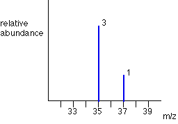
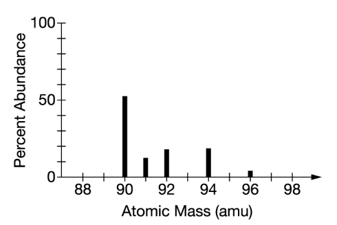

6.02 × 10²³ is the number of particles (or things) in a mole.
Given 1 mol of two different substances, it is possible for them to have different weights because the particles in each may have different masses.
Given a chemical formula, such as C₁₂H₂₂O₁₁, you can determine the mass of each individual atom by multiplying the number of atoms by its atomic mass:
The molar mass for the entire C₁₂H₂₂O₁₁ compound is the sum of each part:
144.12 g C + 22.22 g H + 176.00 g O = 342.3 g of C₁₂H₂₂O₁₁
Molar mass is used to convert between moles and grams of a substance. The ratio can be used either way to convert:
| 0.85 mol of C | 12.01 g of C | 10.2 g of C |
| 1 | 1 mol of C |
| 10.2 g of C | 1 mol of C | 0.85 mol of C |
| 1 | 12.01 g of C |
Try this quick quiz to reinforce what you just learned about molar mass and particle count.
How many moles are in 45.68 g of Sodium (Na)?
What is the molar mass of Calcium Carbonate (CaCO₃)?
Mass spectra is used to identify the isotopes of an element and their relative abundances...
Example: Cl-35 and Cl-37 average to 35.45 g — shown on the periodic table.
Example: Unknown element with average mass near 91 g → likely Zr (91.22 g).
Try this quick quiz to reinforce what you just learned about mass spectra.
An unknown element occurs naturally in three weights: 20, 21, and 22 amu...
Mass spectra is used to identify the isotopes of an element and their relative abundances...
Example: Cl-35 and Cl-37 average to 35.45 g — shown on the periodic table.
Example: Unknown element with average mass near 91 g → likely Zr (91.22 g).
Try this quick quiz to reinforce what you just learned about mass spectra.
An unknown element occurs naturally in three weights: 20, 21, and 22 amu...
Which of the following has the highest boiling point?